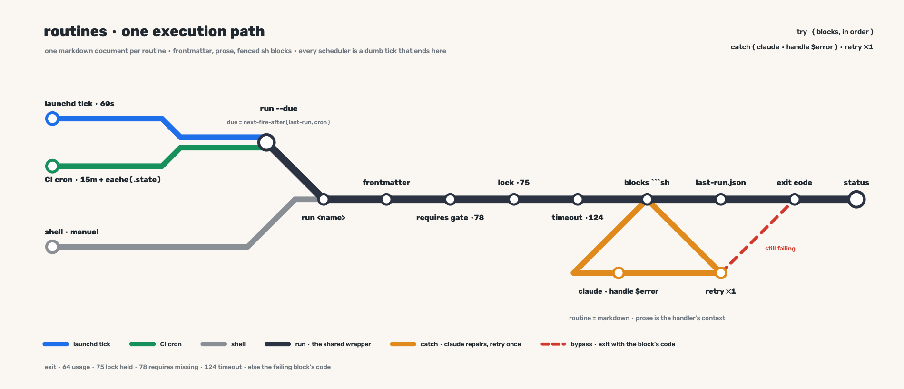

executable markdown on rails
A routine is a single markdown document — frontmatter for schedule,
prose for judgment, fenced sh blocks for mechanics.
bin/routine runs the blocks deterministically; when one
fails, the document itself becomes the prompt: claude receives the error in full
context, repairs state, and the runner retries the block once. Every scheduler —
launchd locally, a CI cron, a human at a shell — is a dumb tick that ends at the
same routine run.
try { blocks, in order } # zero-LLM happy path — cheap, fast, CI-safe
catch { claude("handle $error") } # the doc's prose is the handler's context
The document — $ROUTINE_HOME/<name>.md
Documents and run state live in a routines home —
$ROUTINE_HOME, default ~/.routines,
with state under its .state/; this repo is only the tool,
so personal routines never enter it and the runner can move without breaking launchd.
One file per routine. Frontmatter is flat
key: value, parsed with sed — no yq, no yaml library.
Only sh / bash fences execute,
sequentially, each under bash -e; other fences are
material for the prose.
--- schedule: 30 7 * * 1-5 # 5-field cron, evaluated in UTC; omit ⇒ on-demand only timeout: 600 # seconds for the whole routine requires: GITHUB_TOKEN # env vars that must be non-empty on_error: claude # claude (default) | fail --- # Morning brief Prose is not decoration — it is the context the error-handler inherits: intent, traps, judgment calls. Write it for the agent that arrives when a block below has just failed. ```sh gh api notifications --paginate > "$ROUTINE_STATE_DIR/inbox.json" ``` ```sh claude -p "summarize inbox.json …" # a block may itself call claude — an agent step on rails ```
try / catch — the failure contract
The happy path never calls a model. The document is the handler's context precisely because it was written before anything broke.
- blocks run in order; each block's output is appended to the run log under a block delimiter
- each block's exit code is the truth — nothing interprets it
on_error: claude- the runner invokes
claude --model opus --permission-mode=auto --no-session-persistence -pwith the full document, the failing block, and its captured output, cwd = the routines home - instruction: running unattended; diagnose and repair state; do not continue the routine yourself
- the runner re-executes the failing block once — pass ⇒ continue to the next block; fail ⇒ the routine exits with that block's code
- one repair attempt per block, no loops
- no claude binary or auth (bare CI) ⇒ behaves as
on_error: fail, with the reason logged
- The agent never steers control flow — the deterministic retry is the verdict, never the agent's exit code.
Due-ness — derived, never matched
A routine is due when
next-fire-after(last started run, schedule) ≤ now; a
missing last-run.json means due. Cron evaluates in UTC —
one clock for launchd, CI, and the shell.
| one evaluator buys | why |
|---|---|
| CI correctness under delayed or skipped ticks | compare against the last run, not "does now match the expr" |
| launchd catch-up after sleep | free — the same comparison, no wake hook |
routine run --due as the universal entry | every scheduler is a dumb tick |
next-fire-after
is a minute-scan forward from the last run (horizon 366 days) — dumb, correct,
sub-second.
Schedulers are dumb ticks
Neither scheduler knows a routine's schedule. Both wake up, ask the one evaluator what is due, and exit.
com.routines.dueroutine installrenders one agent;routine uninstallboots it outStartInterval60 +RunAtLoadtrue, running the runner's absolute path withrun --due— nocd, the runner enters the routines home itselfRunAtLoaddoubles as login and wake catch-up
routine sync-ciemits.github/workflows/routines.ymlinto the repo it is invoked in- cron every 15 min +
workflow_dispatch;ROUTINE_HOME= that repo'sroutines/dir, restoreroutines/.statefromactions/cache, fetchbin/routineif absent,run --due, save cache - cache eviction just makes everything due once — the idempotency contract absorbs it
routine run frontmatter → requires gate (exit 78, loud list of missing vars)
→ lock (mkdir .state/<name>/lock, pid inside; live pid ⇒ 75, dead ⇒ reap)
→ watchdog (bash-native; SIGTERM, SIGKILL after grace; exit 124)
→ cd $ROUTINE_HOME (blocks and the catch run there; a missing home ⇒ 64)
→ blocks under the try/catch contract
→ last-run.json {started, started_epoch, finished, exit, duration, degraded}, written on every path (trap) and appended to runs.jsonl
→ the failing block's exit passes through
The plate
One execution path, end to end: the tick, the gate, the lock, the blocks, and the single catch that repairs and retries.

docs/PLAN.png, regenerated by docs/plate.pyVerbs
Six verbs — the whole surface. Every one of them ends at the same runner.
| verb | duty |
|---|---|
| run <name> | run one document through the wrapper — gate, lock, timeout, try/catch |
| run --due | the universal entry — run every due routine; silent when none are |
| status | frontmatter × last-run join: schedule, due?, last exit, duration |
| install | render and load the single launchd tick agent |
| uninstall | boot the agent out and remove its plist |
| sync-ci | (re)write ./.github/workflows/routines.yml in the invoking repo |
Exit codes and contracts
| code | meaning |
|---|---|
| 64 | unknown routine, or usage |
| 75 | lock held by a live run |
| 78 | requires missing |
| 124 | timeout — the watchdog fired |
| else | the failing block's own code, passed through |
- Blocks are idempotent — catch-retry, cache eviction, and tick overlap can all double-fire; the lock serializes, idempotency absorbs.
- bash 3.2-safe, zero-dep —
bin/routineis one script with no jq, yq, or GNU timeout; claude is needed only when a catch fires or a block calls it. $ROUTINE_HOME/.state/is never committed — CI persistsroutines/.statethroughactions/cacheonly.